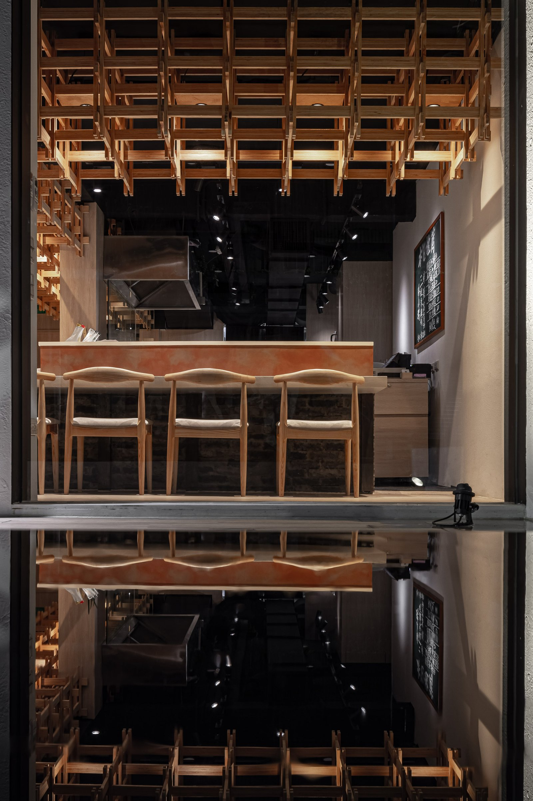
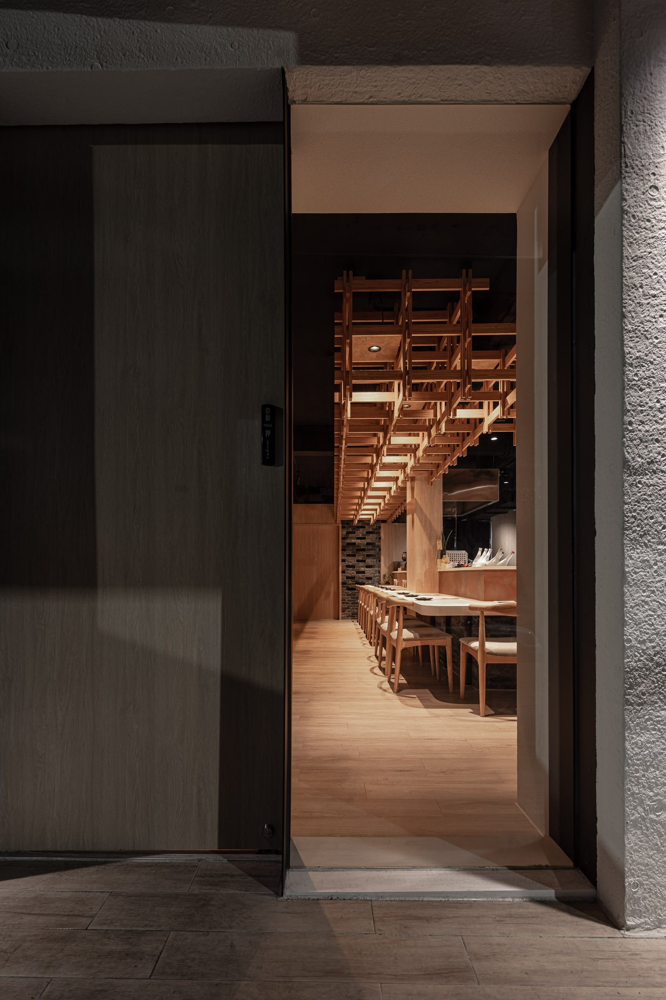
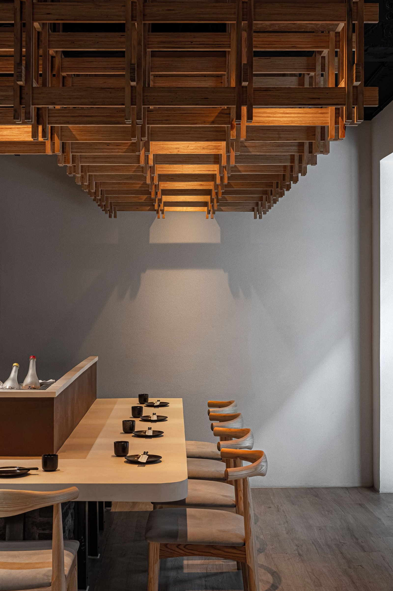
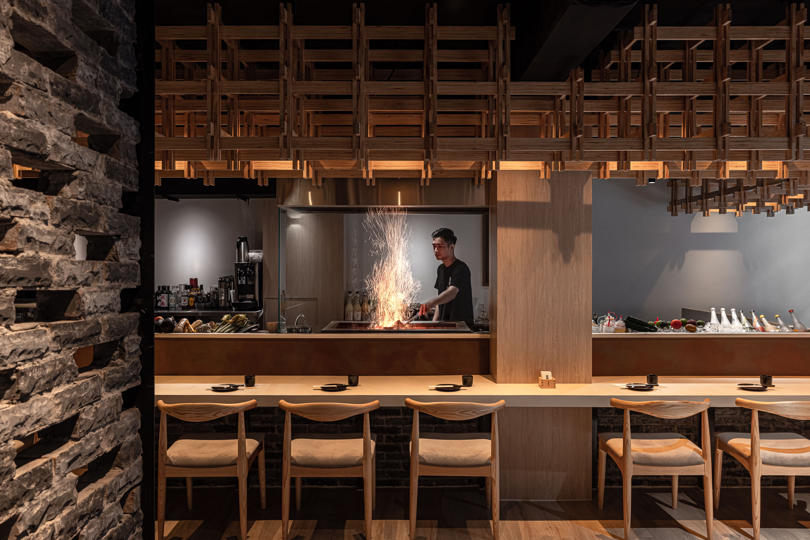
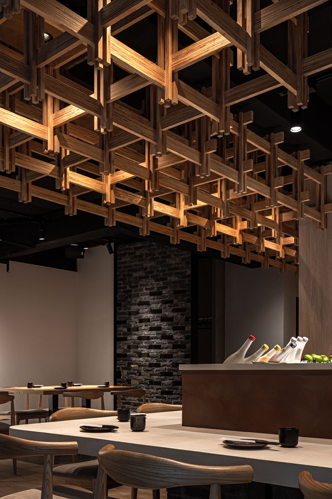
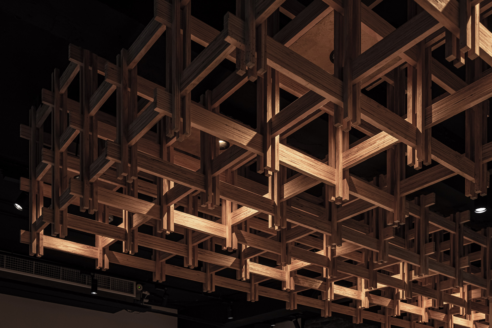
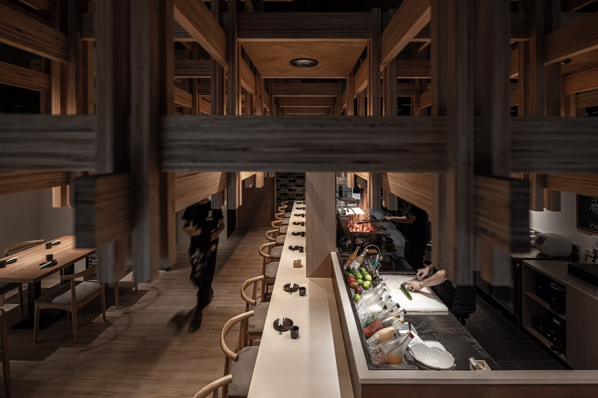
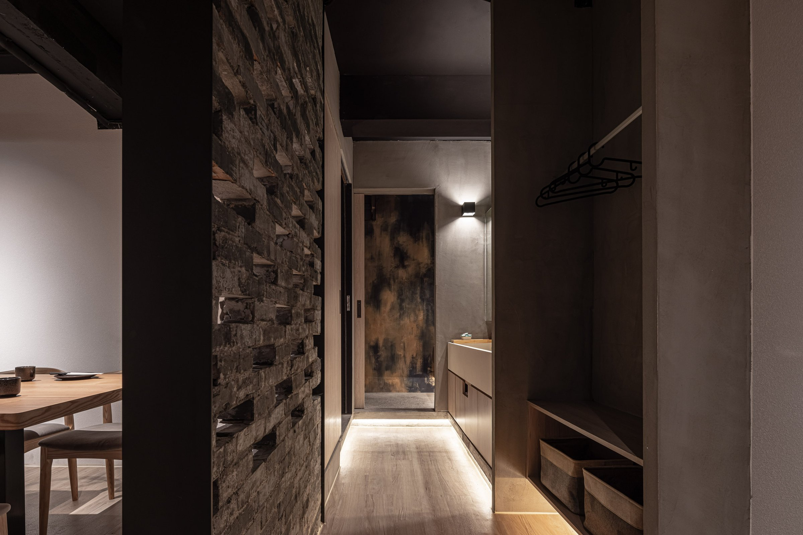
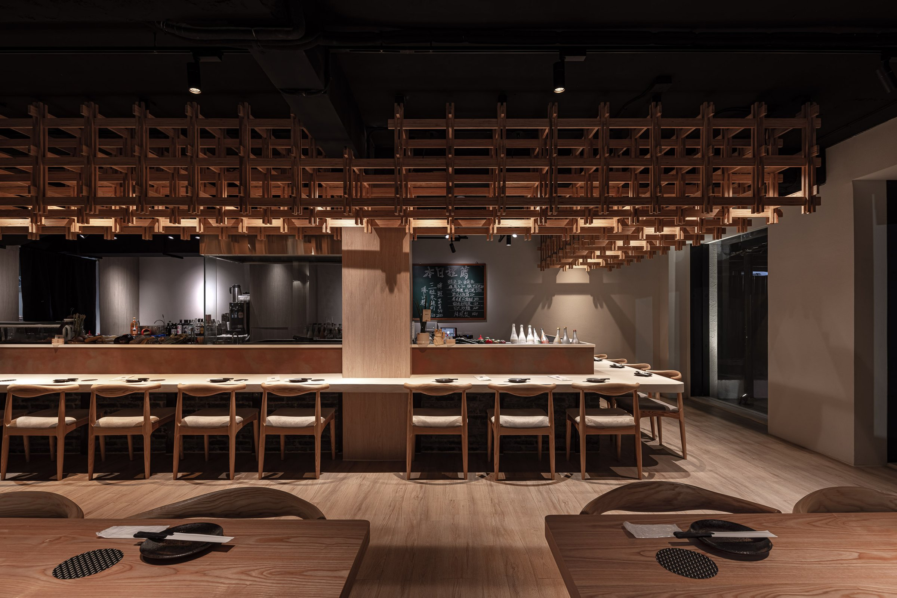

爐端燒的核心是食物和火，每個決定都在清除無關的視覺干擾。
The core of robatayaki is fire and food. Every decision removes visual noise.


01
周圍是老公寓、鐵捲門、電線，街道在說很多話。樂樽選擇白色立面。不是風格，是特殊塗料——抗汙、乾淨、帶著界線感。立面不做多餘的事，只讓室內的暖光從大面玻璃透出來，讓人在還沒推門之前，先看見裡面的木構與火光。
The surroundings speak loudly — old apartment blocks, shutters, overhead wires. Lezun chose white. Not as style, but as a material decision: anti-stain, clean, boundary-defining. The facade does nothing extra, only lets warm interior light pass through the glass, so before you push the door, you see wood structure and firelight inside.


02
推門之後，色溫轉暖，墨色天花把設備收進背景，視線回到餐檯與料理檯。吧台不選石材，霧沙面特殊漆料降低反光度，讓食物在檯面上安靜地成立。
Inside, the color temperature shifts warm. A dark ceiling absorbs equipment into the background; the eye returns to counter and cooking surface. The bar is not stone — a matte sand-finish coating reduces reflectivity, letting food exist quietly on the surface.


03
天花板那組木格柵，發想於「堆、疊」的構造感，燈藏在第二層，光從縫隙透出，陰影有了厚度。
The wooden grille on the ceiling draws from a logic of stacking. Lights hide in the second layer; light passes through the gaps, and shadow gains depth.


04
座位安排回應爐端燒「圍著火吃」的本質。吧台座位面向料理檯，讓客人看見食物從火到盤的完整過程。後方座位退開一步，保有觀看的距離但不失參與感。每一個位置都跟火有關係，只是遠近不同。
Seating responds to robatayaki's essence — eating around fire. Bar seats face the cooking station, letting guests witness the full journey from flame to plate. Rear seats step back, keeping a viewing distance without losing participation. Every position relates to the fire; only the distance differs.

05
最後一個決定是音量。爐端燒的料理聲——火的聲音、刀的聲音、食材落在鐵板上的聲音——是空間體驗的一部分。吸音材只用在座位區的天花，讓料理區的聲音被保留，座位區的對話被保護。聲音也需要被設計。
The last decision was about sound. The sounds of robatayaki — fire, knife, ingredients hitting iron — are part of the spatial experience. Acoustic absorption is applied only to the ceiling above seating, preserving cooking sounds while protecting conversation. Sound, too, must be designed.
All Photos